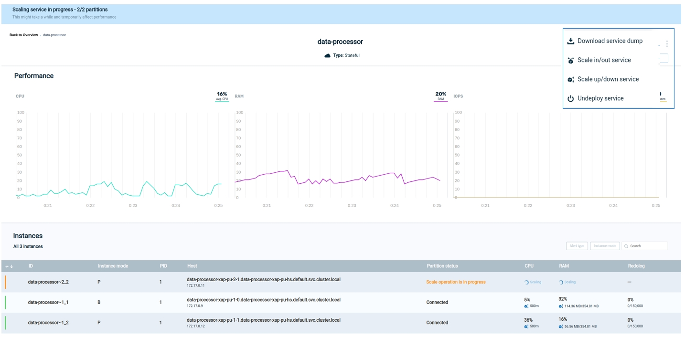
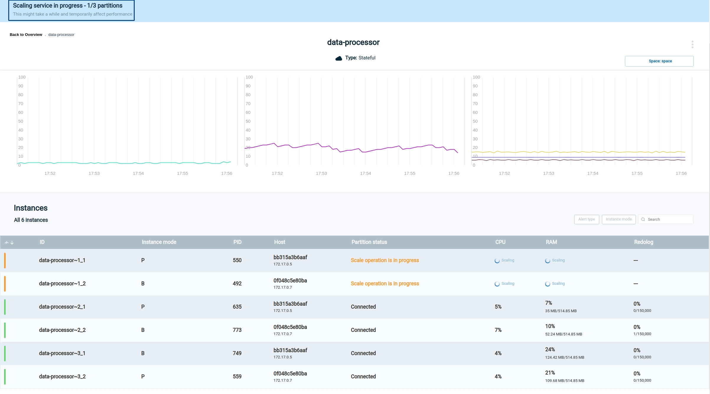

Vertical scaling, referred to as On Demand Scale Up/Down and the subject of this topic, allows the amount of RAM and CPU to be increased or decreased - without downtime - for an active GigaSpaces cluster. For example, additional memory or CPUs may be added to an existing physical node.
Another form of scaling, horizontal scaling, referred to as On Demand Scale Out/In, means to add or reduce the number of partitions used for an application. For example, additional partitions may be created in the same server, or alternatively, servers may be added or removed.
For an overview of both types of scaling, see
On Demand Scale Up/Down is supported in Kubernetes
If an application expects a significant increase in resource requirements at, for example, 9 am daily, the system may be scaled up - to perhaps 20 times greater CPU capacity in the morning. Later in the day, the user will scale the system back down to its default level.
Another example is Black Friday or Digital Monday, during which the system expects marked peaks of activity. Up scaling can be performed before the expected busy period, and down scaling can be done when normal activity levels resume.
In this way, SLA/performance levels can be met consistently throughout the day.
Scaling is performed by the user on demand, at the time that they want to change the resource levels. Scaling can be performed either by entering a command in the command line, or by requesting the scaling in the Ops Manager.
The option of which partitions to scale depends on the service type.
For a Stateful service, the service must be deployed with High Availability to enable the Scale Up/Down functionality.
For a Stateful service -
For a Stateless service --
Scale Up/Down can be performed in each of the
When using the Command Line Interface or REST API, the user can scale a list of partitions in a single request.
This is in addition to the ability to scale a single partition or to scale a service, as provided in Ops Manager.
For all of these environments, two basic decisions are required: which partitions to scale, and how much to scale.
Regarding which partitions, the user can request that all partitions using a particular service should be scaled, or they can choose a specific partition.
Regarding the amount to scale up or down, the user chooses a value for CPUs and RAM, which will be applied to all of the partitions that are scaled.
From the Service screen for the stateful service that you wish to scale, hover over the three dots on the top of the screen, and click Scale up/down:

Note that the appearance of the three-dot menu will be different for Kubernetes and for ElasticGrid:
The Scale Up/Down screen appears.
In this Kubernetes example, the user chose a CPU value of 500m (millicores), and a RAM size of 600 MiB.
Click Apply to accept the values shown. A confirmation screen will display:
Click Run Scale to proceed with the scaling request, or Cancel to abort the request.
We are scaling up or down on the service level.
This means that all of the partitions using this service will be rescaled. Each of these 100 instances will be rescaled to 500m and 600 MiB.
During the scaling process, both the original instances and the new instances will co-exist in memory. This will require a temporary increase in the total amount of system resources.
After you click on Run Scale, the scaling process will begin. At that point, it is not possible to cancel the scaling operation.
The next screen shows the scaling request in progress.

The blue banner on the top of the screen is a progress indicator with messages indicating the stage of the scaling:
Note that for performance reasons, and to ensure high availability and service resilience, scaling is done in small "batches" of partitions. In this example, 100 instances are being scaled, in ten batches of ten partitions each.
When scaling completes successfully, a message is displayed:
If an error occurs, an appropriate message will display:

and the right side of the screen will show an option to display an error log:
During the scale process, if the scaling of one of the partition fails (possibly caused by lack of system resources), this partition will be reverted to its previous configuration and the scale process will be stopped (the next partitions won't be scaled).
An error message will display, and the partitions that have already scaled, will stay scaled.
No data loss will occur.
Once the scaling request has completed, a cube-shaped icon displays on the top right of the screen. You can hover over this icon to see a brief description of the scaling result:
From the Service screen for the stateful service that you wish to scale, hover over the three dots that are on the same row as the partition instance that you wish to scale, and click Scale up/down:
Note that you can select either the primary instance of the partition or the secondary instance. Either choice will scale the same partition.
The Scale Up/Down screen will display, as discussed above:
Note that in this case, the particular partition number, Partition 14079, is displayed on the top of the screen.
A log file is available with detailed information about the partition. For instructions on viewing the log file manually, see
Vertical scaling is performed via the command line command of scale-vertical, abbreviated as scale-v.
gs> pu scale-vertical --partitions=[partition-list] --memory=[memory-value] --cpu=[cpu-value] [service-name]Increase or decrease the memory and CPU for the partitions in a processing unit.
| Option | Description | Examples |
|---|---|---|
| partition-list |
The list of processing unit partitions to be scaled. If this parameter is omitted, all partitions will be scaled. This parameter must be omitted for a non-stateful processing unit. |
--partitions=1,2,3 |
| memory-value | The new amount of memory allocated to each partition, in units of Mebibytes for Kubernetes |
--memory=500Mi (Kubernetes) --memory=500 (ElasticGrid) |
| cpu-value | The new amount of CPU resources allocated to each partition, in units of millicores (Kubernetes) |
--cpu=500m (Kubernetes)
|
| service-name | The name of the processing unit to be scaled up or down. | myProcessingUnit |
The following example scales partitions 100 and 112 in processing unit myProcessingUnit to 800MiB and 4 CPUs.
Note that if a partition initially had a lower value for these parameters, then this is considered a scale up operation for that partition; otherwise it is a scale down operation.
pu scale-vertical --partitions=100,112 --memory=800Mi --cpu=4000m myProcessingUnit
As in the previous example, the following example scales partitions 100 and 112 in processing unit myProcessingUnit to 800MiB and 400m CPU.
curl -X POST --header 'Content-Type: application/json'
--header 'Accept: text/plain'
'https://172.17.0.4:8090/v2/pus/myProcessingUnit/scale-v?partitionIds=100,112&memory=800Mi&cpu=400m'
.